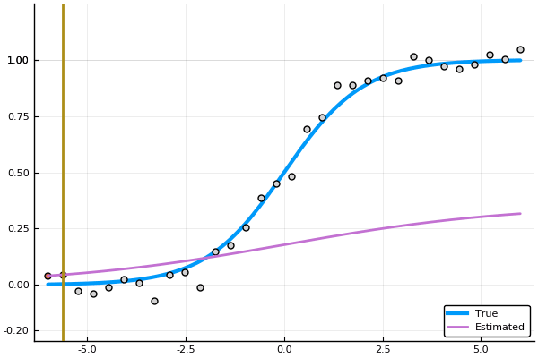

Sigmoid fit
Inspired by the nice tweet of Constance Crozier, here is the julia code to illustrate the fit of a sigmoid as a function of the number of samples.

using Plots, LsqFit
@. σ(x, θ) = θ[1]/(1 + exp(-θ[2]*x))
x_plot = range(-6,stop=6,length=128)
y_plot = σ(x_plot, [1, 1])
n = 32
xdata = range(-6,stop=6,length=n)
ydata = σ(xdata, [1 1]) + 0.05*randn(n)
anim = @animate for i in 2:n
θ_est = coef(curve_fit(σ, xdata[1:i], ydata[1:i], [1.0, 1.0]))
plot(x_plot, y_plot, label="True", legend=:bottomright, ylims=(-0.25, 1.25), w=3)
scatter!(xdata[1:i], ydata[1:i], label="", ms = 5)
scatter!(xdata[i+1:end], ydata[i+1:end], label="", mc = :lightgray, ms = 5)
plot!(x_plot, σ(x_plot, θ_est) , label="Estimated", w=2)
vline!([xdata[i]], label="", w=2)
end
gif(anim, "sigmoid_fit.gif", fps = 10)